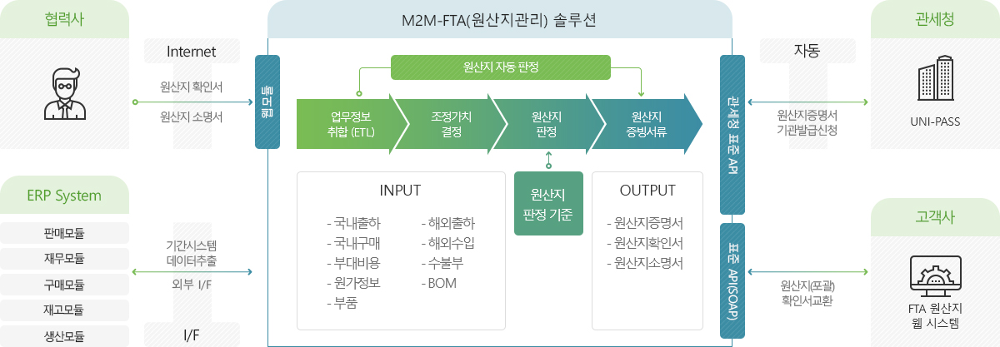

M2M-FTA 서비스 특징
M2M-FTA 솔루션은 FTA를 효과적으로 준비해야 하는 국내 기업들이 실제 얻을 수 있는 관세환급의 혜택을 확인할 수 있도록 지원합니다.
FTA
원산지관리
- FTA 체결 다변화에 따른 FTA 발효국가의 지속적 확대
- FTA 체결 국가별 상이한 규정으로 원산지 규정관리의 어려움
- 국가별 FTA 법률적 감사 및 검토 요구시 대응력 부재
- FTA 전문입력 부재 및 대응방안 부재로 업무 오류 발생
- 다수 국가의 원재료 조합으로 구성된 제품의 원산지 판명의 어려움
체계적인 원산지 관리 및 검증 대비를 위한 "숙련된 원산지 판정 및 그에 맞는 관리시스템필요"
-
충실한 기본기능
- 충실한 기본정보 관리기능
- HS, 재료, 제품, BOM
- 다양한 경로의 재료 원산지 관리(구매,수입)
- 편리한 제품 관리 기능 (출하,선적,재고)
-
우수한 판정능력
- Rule Base Method
- Accurate, fast, convenient judgment function
- 시뮬레이션 지원
- 판정History
- 대용량 데이터 처리
-
다양한 연계기능
- ERP연동 지원
- 기관발급 지원 관세청, 상공회의소
- 기업간 원산지 연계 처리
- 현대자동차 FTA포탈
-
사후검증 대응
- 원산지증명서 보관 (PDF,XML)
- 판정 근거서류 보관 (구매, 원가)
- 판정 History 추적 기능
- 문서 검색 기능
M2M-FTA 도입 효과
-
회사
경쟁력 강화- 기존 Legacy Systme과의 효율적인 통합 시스템 구축으로 기업 경쟁력 강화
- 향후 추가 협정에 대한 확장 가능한 시스템 구축으로 글로벌 대응력 확보
-
오류에 대한
Risk 감소- 시스템에 의한 원산지 관리로 수작업에 따른 오류 최소화
- 정확한 원산지 판정과 증빙자료 보관으로 사후검증에 대한 Risk 최소화
-
비용 절감
- 비대면으로 문서 거래 시간 단축
- 정형화된 계약서식 관리 및 계약 서식별 워크플로우 관리
- 안전한 문서보관과 편리한 검색기능
-
실무자의
업무 부담 감소- ERP를 통해 정보의 수집, 원산지 판정, 증명서류 발급까지 가능하여 FTA 관련한 업무 부담 감소
M2M-FTA 비즈니스 구성도
